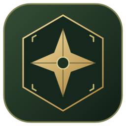

Готово к запуску
Моя игра на этом компьютере
Создавайте кампании и героев, продолжайте сохранённые приключения. Для совместной игры включите доступ через интернет.
Сохранения останутся на этом компьютере.

Мастер и до десяти игроков — в одной кампании.
Играйте вместе из приложения и браузера. Всем участникам нужны адрес одного сервера и приглашение в кампанию.
Создавайте кампании и героев, продолжайте сохранённые приключения. Для совместной игры включите доступ через интернет.
Сохранения останутся на этом компьютере.
Вставьте ссылку Мастера. Ваши кампании и персонажи откроются после входа на его сервер.
Отправьте участникам общую ссылку, а затем код и ключ приглашения из меню кампании. Установка приложения игрокам не обязательна.
Кампании, учётные записи и загруженные карты хранятся отдельно от программы и сохраняются при её обновлении.
Загружаем путь…Прежние кампании доступны на том сервере, где они созданы. Для игры на нём воспользуйтесь подключением по ссылке.